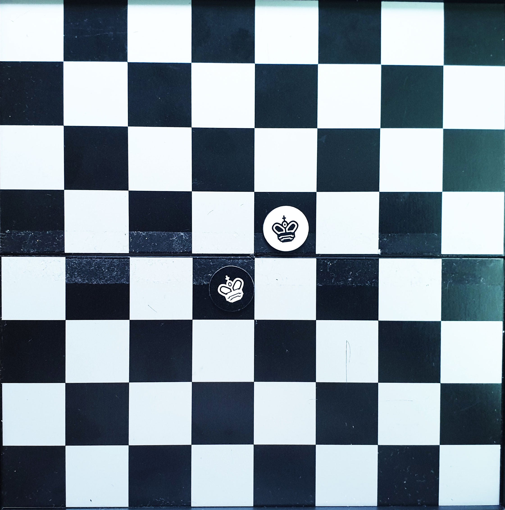

Rules for International Chess
Step 1: Setting up the board
When setting up the board, make sure that the chessboard is place so that the right hand side of the board is white for both players. Then place all the pieces into the board in the following order.
1. The second rank/role are filled with pawns.
2. The rook is at the corner of left and right hand side of the board.
3. After the root, knight will be placed besides them.
4. Followed by bishop.
5. The queen and king will be in between the bishop.
6. The queen will always place on it matching color square(white queen on white square, black queen on dark square)
7. The remaining square will be occupied by the king.
Step 2: How does each of the pieces move
Most of the pieces movement is follow by a few simple rules.
- White pieces always move first, and flipping a coin will decide who will be the white chess.
- Pieces cannot move to it destination if it is block by another piece. (Execpt for the knight which have the capability of jumping over pieces)
- Pieces cannot move to a square which is already been occupied by your own piece.
- If you move your piece to a square that is occupy by your enemy pieces, you will capturing the piece by replacing your piece with their piece.
- All pieces have different ways of moving around the board, if the player move the pieces not following the rules, it will be consider a illegal move and you will penatly.
King
The king is the most important piece among the others pieces as you can only win the game if you capture your opponents king. Similiar, you wil lose the game if your king is captured by your opponents. So please take good care of your king. But the king piece is by far the most weakest among the others.

The king piece can only move one square in either direction, horizontal, vertical, or diagonal.
King cannot move into a square that will check himself (where he will be capture)
Queen
The queen piece is consider one of the strongest piece on the board. Therefore, the queen can be used as offensive and defensive piece at the same time. Coordinate well, and the queen will be really powerful.
The queen can move in any one straight direction, as far as she can, as long she does not go through any of her own pieces.
Bishop
Bishop is good to cover up dark or white square weakness because of the way the bishop move. Therefore, bishop is good to control square and securing the safety of king
Bishop can move as far as it can, but diagonally and no other pieces is blocking it way. There will be two bishop in every game, one start on one color (light or dark) and they have to always stay on that color.
Knight
Knight is the most interesting piece on the board for it unique movement and also the ability to jump over pieces.
The knight move in a "L" shape. If want to be specific, the knight move two squares in one direction and one more square at 90 degree angle, which form a "L" shape.
Rook
The rooks are quite important as the rook used to protect others piece. A rook can also really easily cover a rank(horizontal row) or a file(vertical row).

The rook is able to move as far as it wants, but only horizontally and vertically but not diagonally.
Pawn
The weakest chess piece among the whole board, the pawn. But if you able to play the pawns pieces smartly, you will be able to limit the movement of opponent's pieces.
Pawns can only move one square infront.The pawn can only capture one square diagonally in front of them. They can never move or capture backwards and similiar, they cannot move forward if they is a piece infront of them. If a pawns is able to reach to the last row , which will be the row/rank where your opponent's pieces started, your pawn will be able to promote into other pieces, such as rook, knight, bishop or even the queen.
References: Learn how to play chess
Regulation for Interational Chess
Inside of a game of chess, there are some regulation that player have to follow, especially when player is participating in a competition.
It recommended to follow no matter during a pratice game or competitive game to make the player comfortable while playing and does not make any of the mistake.
Here are all the regulation you have to followed:
Touch Move
Touch and move rule is really important and all player have to strictly followed it. So basically, if a player touches their own pieces, then he must move that and the only piece. If player touches an opponent piece, the player must capture it . If player just want to adjust the pieces, please specific your action before doing it, usually saying the word "adjust" will do.
Time and clocks
For every game of international chess, each player only have a limited time to move their pieces. Time will be recorded for each individual move. Player can take more or less for each individual move as long as the time does not run out. If you ran out of time, you will lose the game. So better be fast for some move, so you have time to think for some difficult situation.
No interference and distractions
Interferences from third party is not allowed any time when the game has started. This included suggestion, cheering, or making any conversation with the player. This rule is applied to both the player and also the audience. Violating the rules will either kick the audience out of the game area or you will lose the game.
Illegal moves
Making an illegal move within the game will result you some penalty. If you illegal move, the board will restore back to the position before you did the illegal move, and you have to move that piece with a legal move. If there is no legal move, you are free to move any piece. But if you complete a illegal move by pressing the clock, the opponents will gain an extra 2 minutes. And if you did 2 illegal move within a game, you lose the game. So becareful, players.
References: Basic Rules of tournament chess